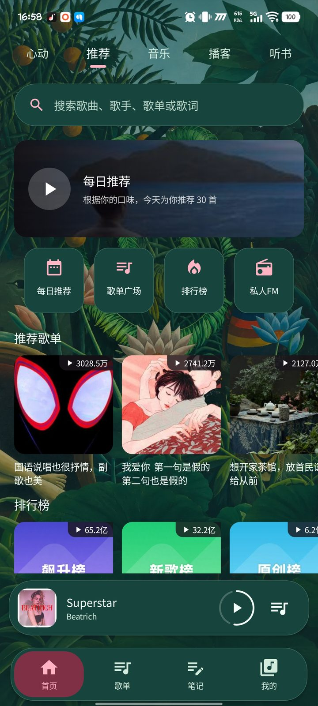
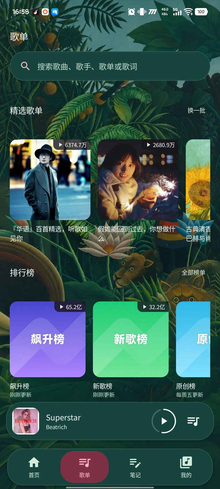
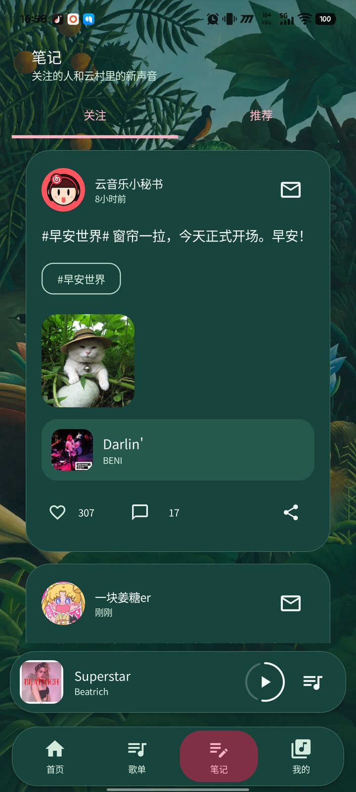
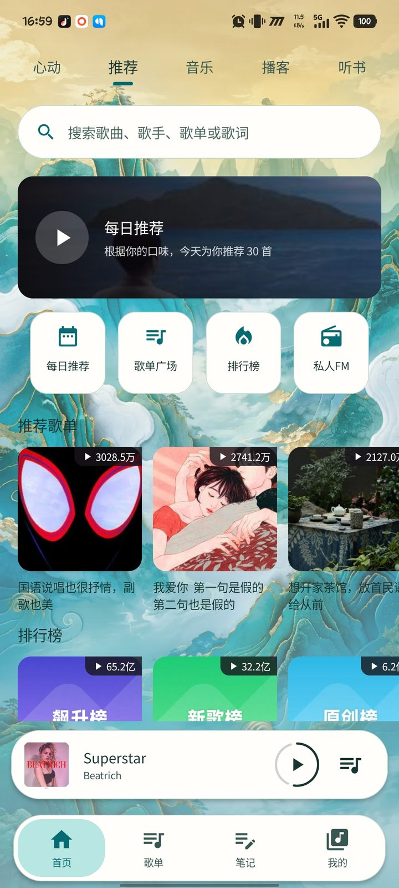
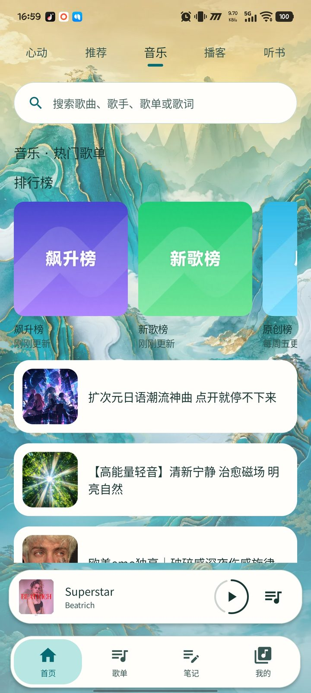
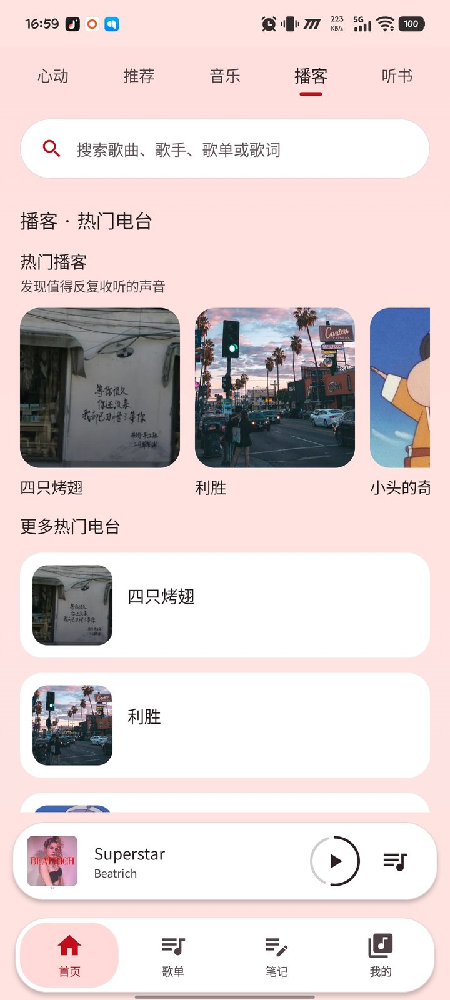
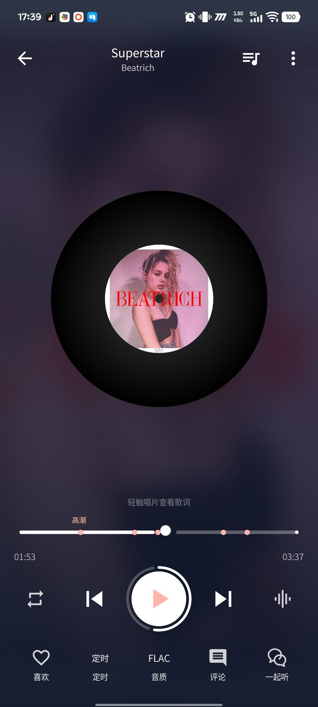
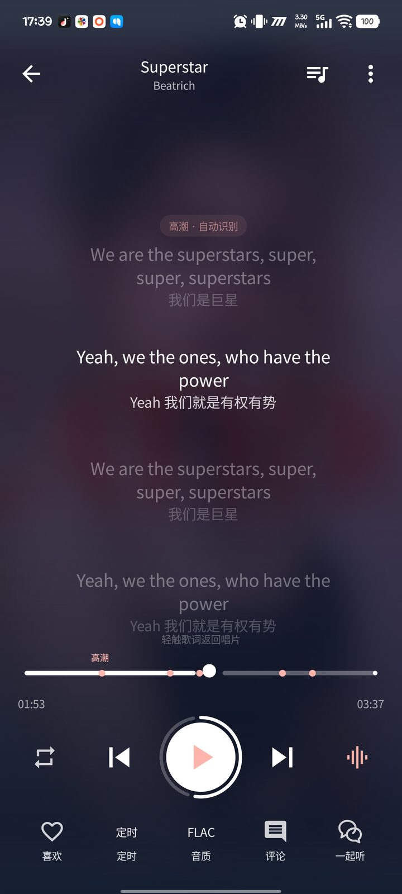

01
登录与会员
WebView 官方登录为主、扫码兜底；QQ 原生授权回跳在 0.2.42 修复。登录态与会员信息本地加密保存。
云声是一个用 Kotlin Multiplatform + Jetpack Compose 从头重构的网易云音乐 Android 客户端。 逐字歌词、离线播放、睡眠定时、四套名画主题，安装包 19.81 MB，不预置任何第三方 SDK。
八张没有修过的截图：松林的首页、歌单与笔记，拾穗的发现页与歌单广场，睡莲的播客电台，还有星夜的播放与歌词。点开任意一张可看原图。








按《网易云音乐重构方案（精简聚焦版）》裁剪：只保留真正每天会用到的，其余全部删掉。
WebView 官方登录为主、扫码兜底；QQ 原生授权回跳在 0.2.42 修复。登录态与会员信息本地加密保存。
LRC / YRC 解析、逐字渲染、原文与翻译合并、全屏与锁屏歌词，也支持加载本地 .lrc。
按账号权限自动选音质，不可用时逐级降级，播放不中断；设置里可强制指定目标音质。
音频缓存不设应用容量上限、不按时间淘汰。完整缓存一首即可断网或重启后继续播放，升级自动迁移旧缓存。
1 分钟到 24 小时任意时长，小时／分钟滚轮吸附选择；也支持「播完当前歌曲后暂停」。计时由播放服务持有。
红心收藏、创建歌单、单曲收藏进自建歌单、歌单内搜索与排序、改名简介、批量移除。
歌曲评论列表与发布，私信会话收发、关注与粉丝列表；写操作统一走 eapi 通道规避风控。
REST 房间 + 轮询降级方案，多人同步听歌；WebSocket 接入点已预留，协议打通即无缝切换。
移动端 + PC 端双签到，云贝任务一键完成，签到状态本地缓存，不必每天翻设置。
MediaStore 实时扫描本地歌曲，自动匹配同目录 .lrc，与在线歌曲混合播放、统一队列。
设置里直接检查 GitHub 正式 Release、下载 Full arm64 安装包并交给系统安装，校验包名、签名与递增版本号。
唱片在中间转，进度做成唱针走过的弧度。轻触唱片翻到歌词，一句一句居中滚动，高潮段落自动识别并落位。
只构建 Full arm64 单 ABI，安装包 19.81 MB，签名与旧版本一致，可直接覆盖升级。
点站点按钮跳到 GitHub Releases，拉取 Yunsheng-full-…-arm64-v8a.apk。
首次安装要在系统里允许「安装未知来源应用」，浏览器下载完成后直接点打开。
后续在 App「设置 → 检查更新」里直接装，签名一致，登录态、歌单与音频缓存都会保留。
arm64-v8a）单 ABI 构建，最低 Android 9（API 28），编译目标 Android 16（API 36）。32 位老旧设备没有对应安装包。